Системы Niagara создают потрясающие визуальные эффекты. Однако при разработке симуляций важно соблюдать баланс между визуальным оформлением и производительностью. Иногда можно создать красивый эффект, но он будет занимать слишком много памяти на целевом устройстве.
Один из способов решить эту проблему — запечь симуляцию Ниагары в флипбук. Так вы получите мозаичное изображение, которое можно загрузить на любой материал.
Например, вы хотите создать эффект 3D-жидкости, но не можете запустить его в режиме реального времени на целевой платформе. Поэтому после создания эффекта 3D-жидкости вы можете использовать Baker, чтобы запечь его в флипбук, а затем применить его к 2D-спрайту. Таким образом, вы получите очень эффективную производительность для игр или для эффектов, которые не являются ключевыми и могут быть на заднем плане.
В этом обучающем руководстве вы узнаете, как с помощью Niagara Baker экспортировать флипбук из симуляции.
Настройте захват для флипбука
Выполните захват
Подключите флипбук к новому излучателю
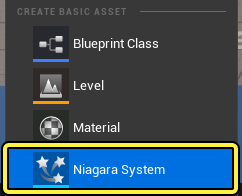
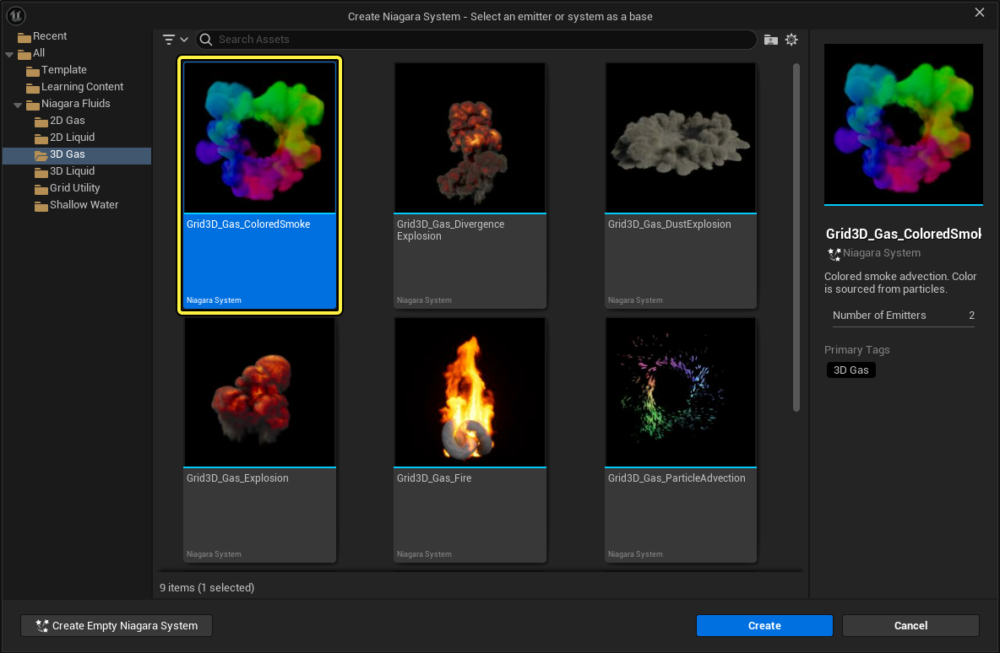
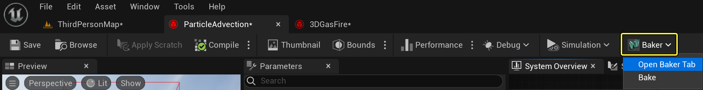
Пользовательский интерфейс панели Baker состоит из следующих частей.
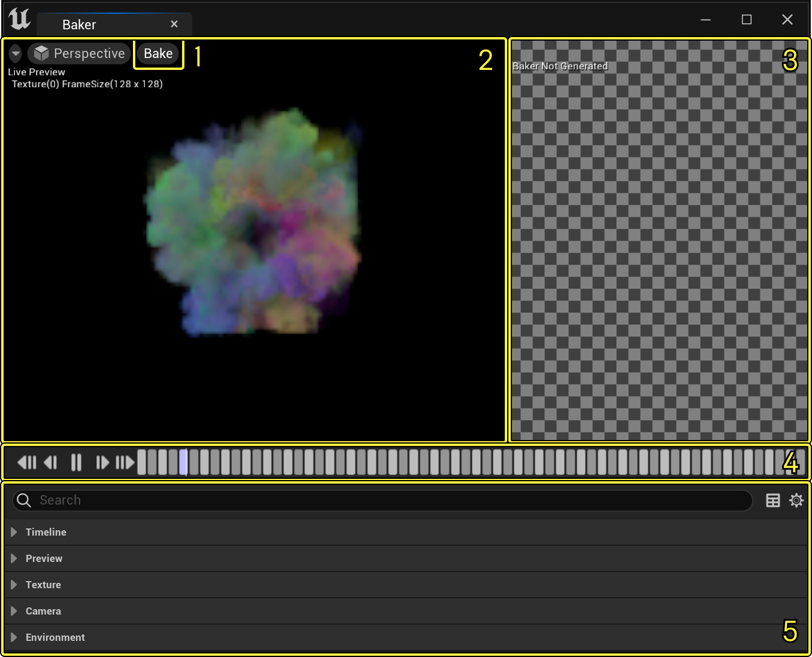
Кнопка «Выпекать»
Предварительный просмотр «Ниагары»
Предварительный просмотр «Флипбука»
Панель инструментов для воспроизведения
Параметры «Флипбука»
Для начала вам нужно обвести симуляцию рамкой в окне предварительного просмотра в Niagara. Симуляция будет разбита на серию плоских 2D-кадров, поэтому убедитесь, что вы выбрали нужный угол и размер.
Чтобы настроить рамку, просто нажмите и перетащите курсор в окне предварительного просмотра в Niagara.
Щелкните левой кнопкой мыши и перетащите, чтобы вращать.
Щелкните средней кнопкой мыши и перетащите, чтобы панорамировать.
Щелкните правой кнопкой мыши и перетащите, чтобы масштабировать.
Нажмите F, чтобы выровнять кадр по исходной точке системы.
Вы также можете ввести числовые значения в настройках камеры. Выберите нужный режим отображения камеры, а затем измените числовые значения в соответствующем поле.
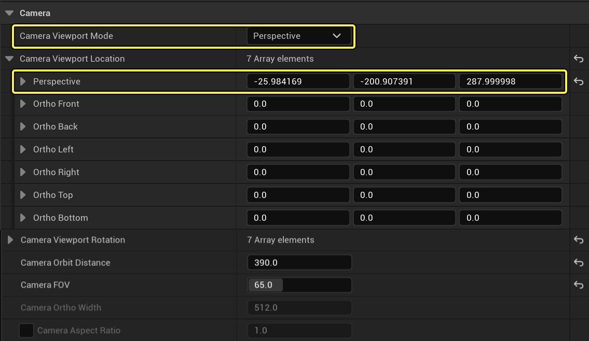
Используйте панель воспроизведения, чтобы воспроизводить, ставить на паузу, перематывать вперед и назад в симуляции и просматривать, что получится в итоге.
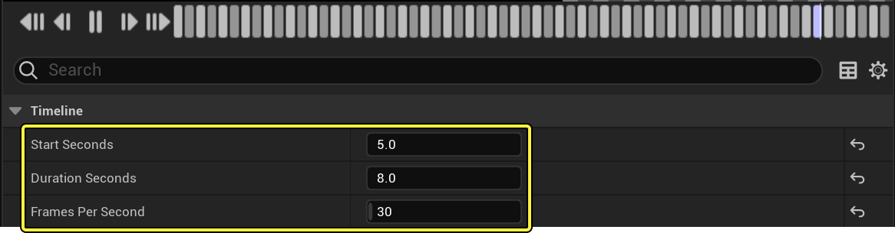
Вы также можете настроить время в параметрах Временной шкалы, чтобы запечь только часть симуляции. Например, настройте начальные секунды, чтобы флипбук запускался в середине воспроизведения симуляции. Настройте длительность в секундах, чтобы изменить время окончания.
Установите количество кадров в секунду, чтобы настроить частоту обновления компонента. Обычно это значение менять не нужно. Установите такое же значение, как для создаваемого вами контента. По умолчанию в редакторе системы Niagara установлено значение 30 кадров в секунду. Если установить слишком низкое значение, один и тот же кадр флипбука может отображаться несколько раз. Например, если вы рендерите флипбук в течение 1 секунды, захватывая 30 кадров, и устанавливаете количество кадров в секунду на 20, то будет записано только 20 уникальных кадров, а не 30.
При запекании флипбука экспортируется мозаичное изображение, где каждая мозаика представляет собой кадр флипбука. Вам нужно указать, сколько мозаик вы хотите отобразить на текстуре, а также общий размер текстуры. По умолчанию текстура состоит из 8 мозаик по оси X, 8 мозаик по оси Y, а общий размер текстуры составляет 1024 x 1024 пикселя.
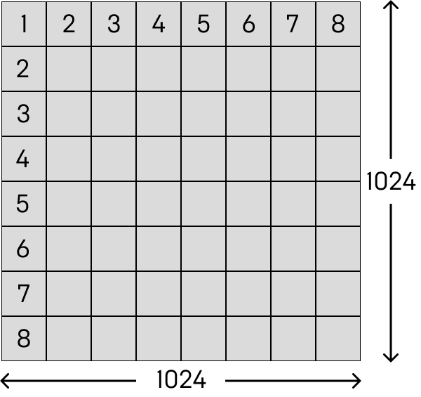
Это означает, что каждая плитка будет размером 128 x 128 пикселей. Вы можете изменить эти значения в настройках Текстура.
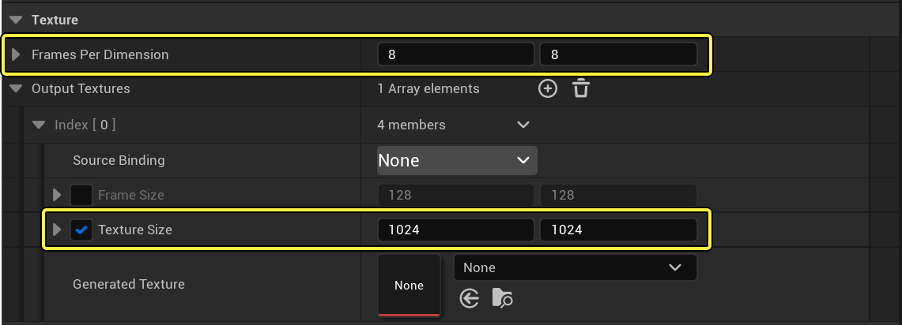
Установите количество плиток, изменив параметр Количество кадров на измерение. Отрегулируйте размер общей текстуры, изменив параметр Размер текстуры.
Пекарь не масштабирует ваши плитки под итоговое разрешение. Для идеального результата убедитесь, что количество плиток делится на общий размер текстуры без остатка. Например, если вы установили значение «Количество кадров на измерение» равным 10 x 10, но сохранили размер текстуры равным 1024 x 1024, система попытается сопоставить 10 тайлов с размером 1024. Однако в этом случае ширина каждого тайла составит 102,4 пикселя, а система не может учитывать неполные пиксели. Таким образом, каждая плитка будет иметь размер 102 пикселя, и в итоге справа и снизу от текстуры останется по 4 дополнительных пикселя. Из-за этого может немного сбиться суб-UV-развертка, и при воспроизведении ваш атлас будет дрожать. Для идеальной работы установите размер текстуры равным степени двойки, а количество кадров на измерение — равным числу, которое делится на размер текстуры без остатка.
По умолчанию, если для параметра Привязка источника установлено значение Нет, Baker выводит значения SceneColorHDR. Обычно это именно то, что нужно. Однако доступны все доступные буферы глубины и атрибуты частиц, и вы можете выбрать любой из них в раскрывающемся меню «Привязка источника».
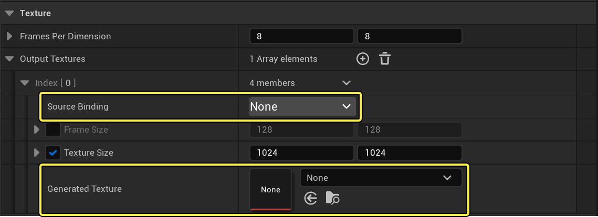
Перед созданием первого флипбука для сгенерированной текстуры установлено значение None. После первого захвата текстура заменяется на новую, которую вы создадите.
Теперь, когда вы настроили текстуру так, как вам нужно, с правильным кадрированием и таймингом, можно выполнить захват.
В окне предварительного просмотра Niagara нажмите Запечь.
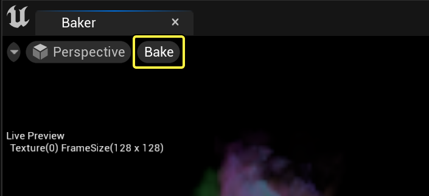
Теперь вы видите индикатор выполнения, пока система создает флипбук. После завершения откроется диалоговое окно, в котором вы сможете указать название файла с текстурой.
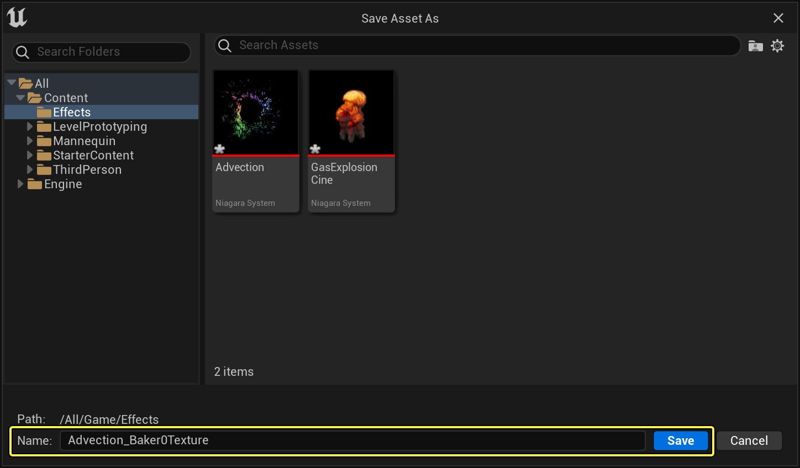
После рендеринга новая текстура заменит активную текстуру в настройках «Текстура» в окне Baker.
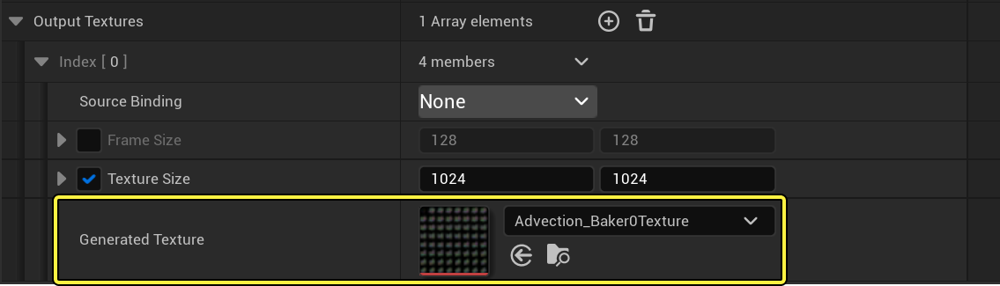
Если вы создадите еще один снимок с этой текстурой, выбранной в разделе Сгенерированная текстура, она заменит предыдущую.
Если вы хотите создать новую вариацию текстуры, нажмите на раскрывающийся список Сгенерированная текстура, затем выберите Очистить. После этого вы сможете изменить любые настройки и создать новую текстуру.
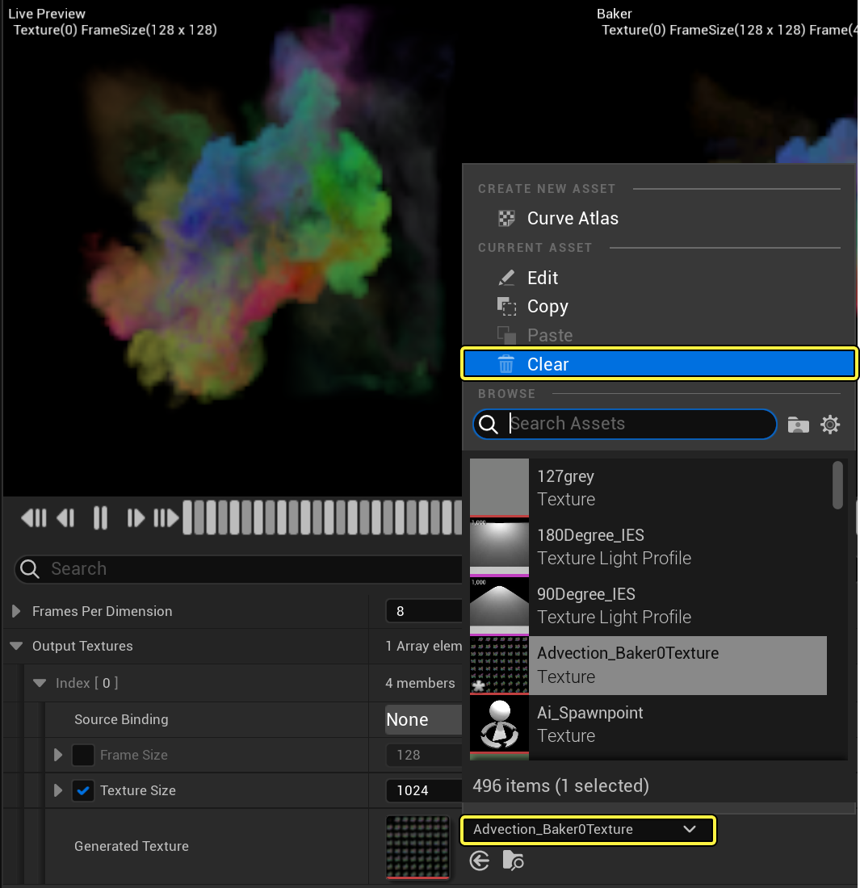
Теперь, когда вы экспортировали текстуру, вы можете добавить ее в любой новый излучатель. Вы также можете посмотреть, как выглядит текстура флипбука.
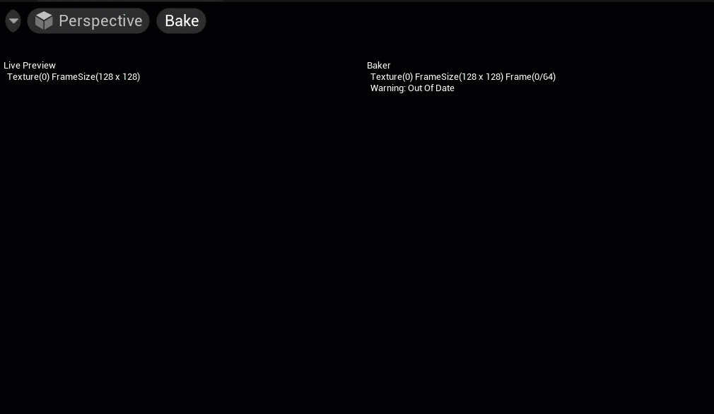
Чтобы использовать флипбук в излучателе, необходимо использовать рендерер спрайтов.
Чтобы настроить это, щелкните правой кнопкой мыши в ящике содержимого и создайте новую систему Niagara.
Выберите Новую систему из выбранных эмиттеров, а затем простой пакет спрайтов.
Нажмите плюс (+), чтобы добавить излучатель, затем нажмите Готово.
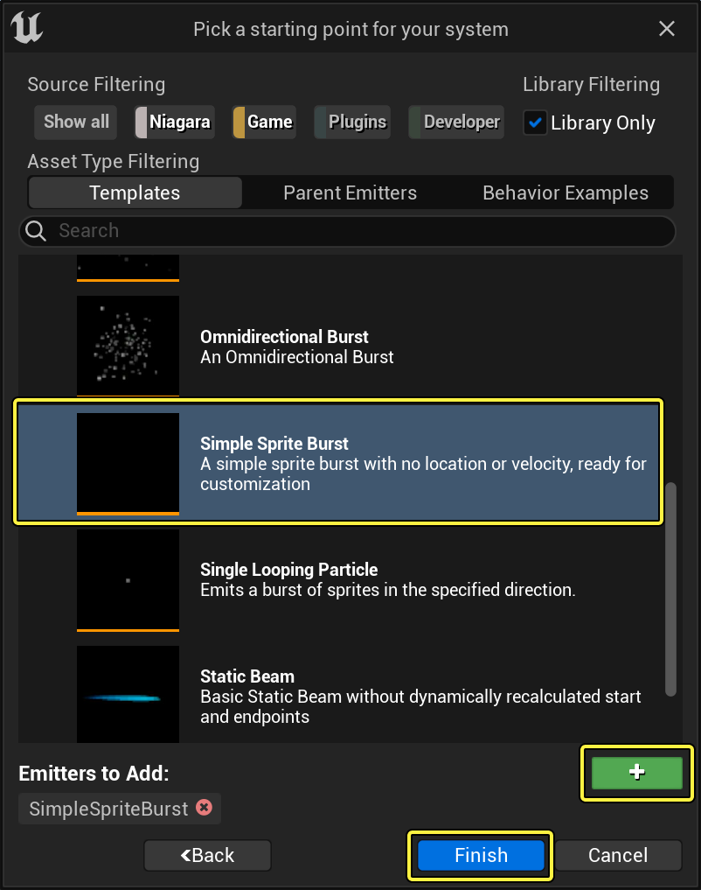
Чтобы добавить его в свой флипбук, вам нужно добавить новый модуль в группу Particle Update, а также настроить некоторые параметры в Sprite Renderer.
Сначала нажмите плюс (+) рядом с обновлением частиц и выберите Sub UVAnimation. Это добавит модуль в стек.
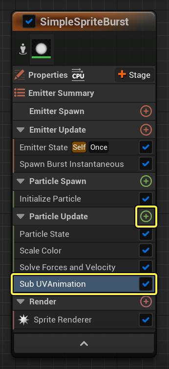
Отрегулируйте начальный кадр и конечный кадр в свойствах модуля в соответствии с количеством кадров в вашей анимации. В этом примере было 8 кадров по 8 кадров, всего 64 кадра. Поскольку кадр начинается с 0-го кадра, оставьте значения 0 и 63.
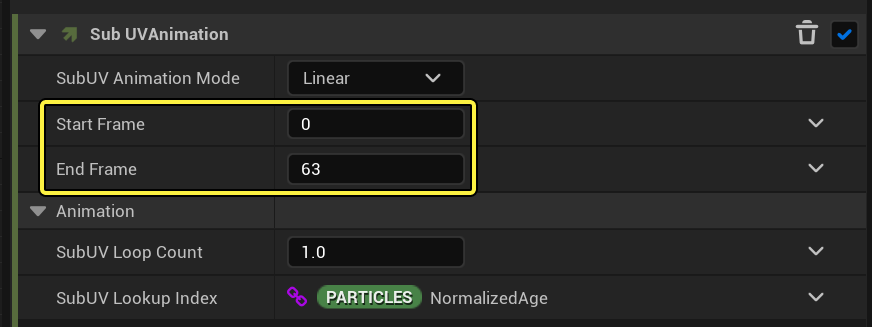
Выберите Sprite Renderer, чтобы настроить свойства. В разделе Sub UV укажите количество плиток в сетке в поле Sub Image Size. В нашем примере оставьте значение 8 x 8.
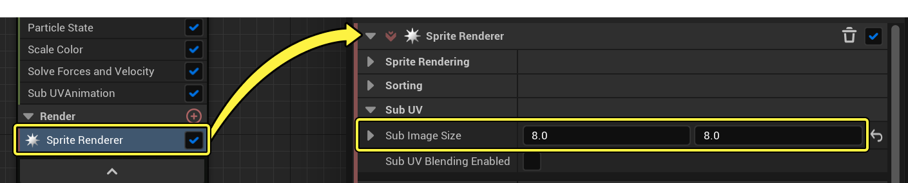
Теперь вам нужно создать новый материал, с которым вы свяжете свою текстуру Sub UV, и добавить его в средство визуализации спрайтов. Щелкните раскрывающееся меню рядом с Материалом, затем выберите Создать новый ресурс > Материал.
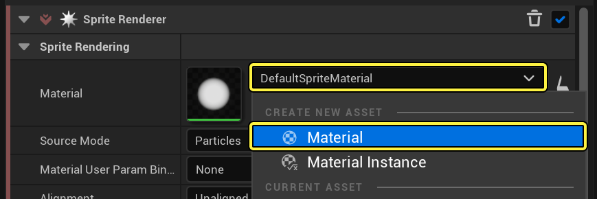
Появится диалоговое окно. Назовите свой материал и выберите место для сохранения.
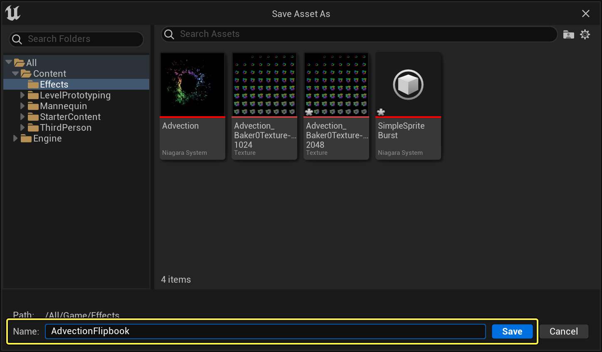
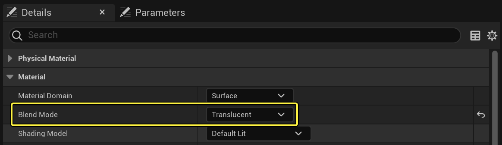
В редакторе материалов щелкните правой кнопкой мыши и выполните поиск по запросу «образец текстуры», чтобы добавить узел TextureSample.
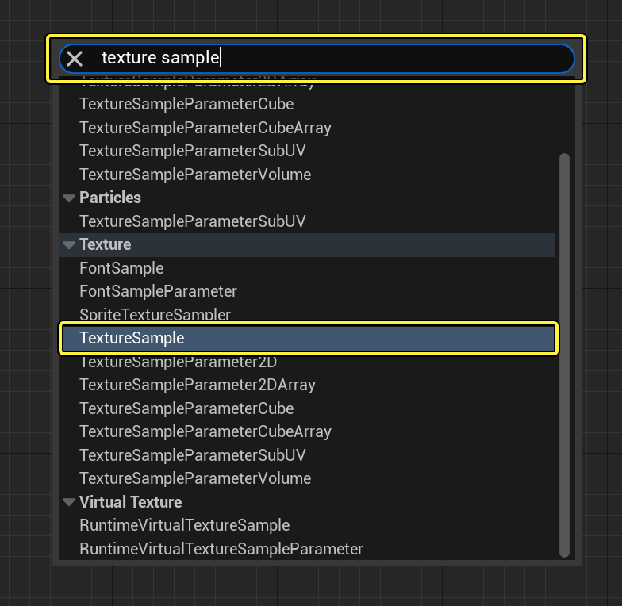
Выберите узел TextureSample. На панели Сведения выберите текстуру, сохраненную из флипбука.
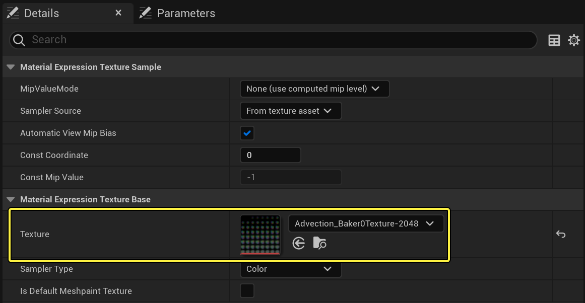
По умолчанию цветовые каналы предварительно умножаются на черный цвет. Чтобы избежать появления черной окантовки вокруг спрайтов, можно использовать узел деления, чтобы убрать ее из каналов RGB.
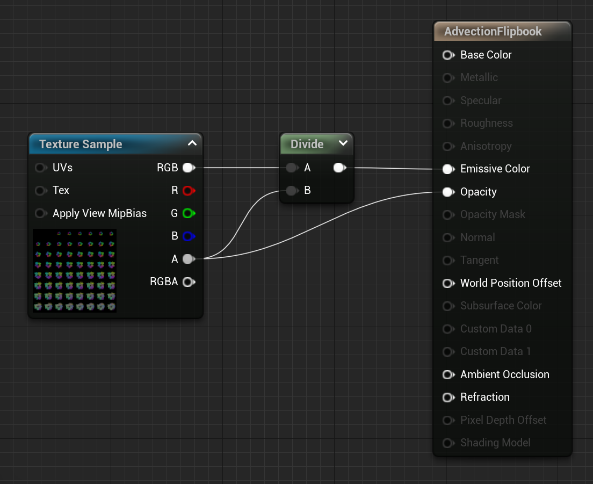
Теперь, когда ваш материал правильно настроен в Sprite Renderer, откройте систему Niagara в редакторе Niagara. В окне предварительного просмотра вы увидите флипбук, который вы создали.
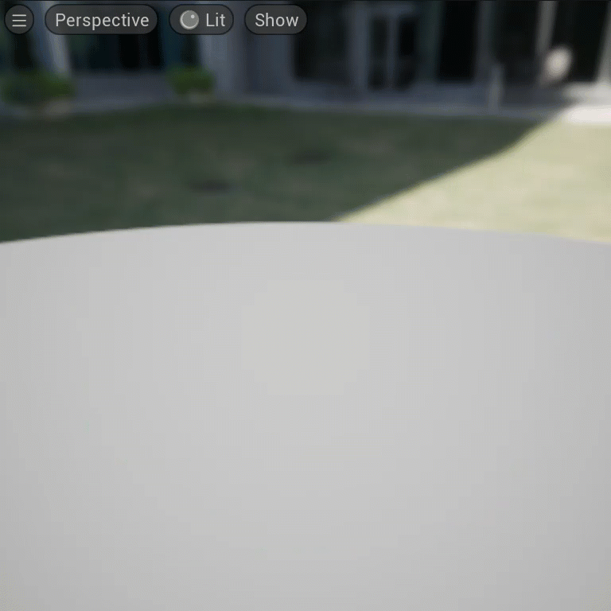